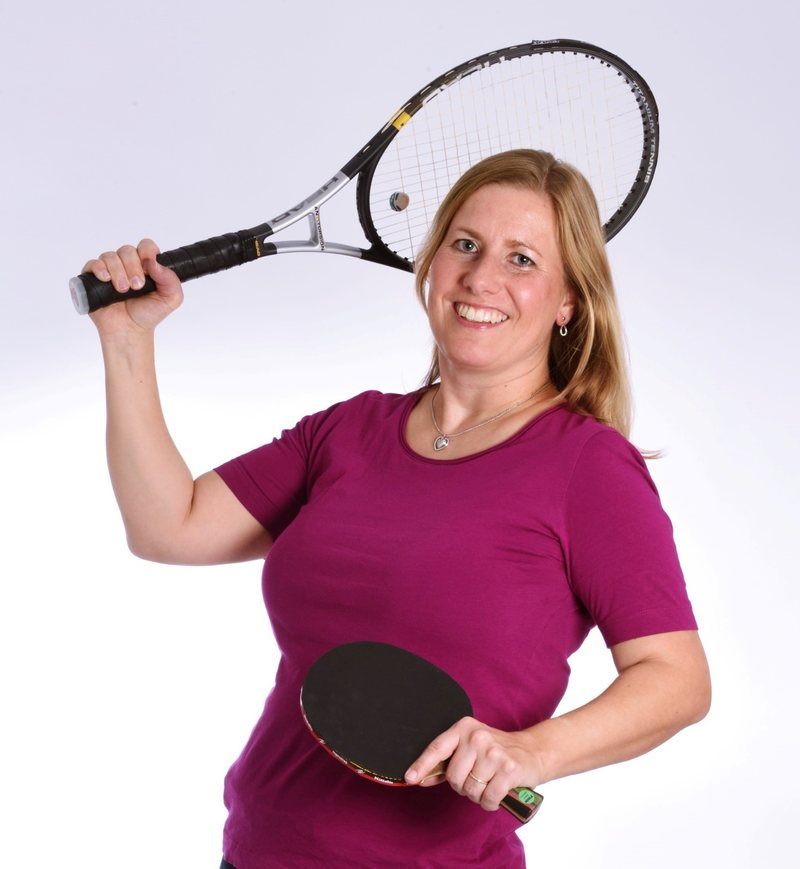

Sport Event Management
Mittendrin statt nur dabei
Das ist mein Motto, unter dem ich mich gerne im Sport engagiere!
Sie organisieren eine Veranstaltung – egal ob Dorfmeisterschaften, nationale oder internationale Profimeisterschaften – und benötigen noch Unterstützung bei der Vorbereitung und Durchführung? Oder Ihre Profimannschaft benötigt organisatorische Hilfe? Gerne unterstütze ich Sie in einzelnen Bereichen, übernehme auch die Projektleitung oder berate Sie in der Umsetzung Ihrer Projekte.
- 25+ Jahre Organisation von Sportveranstaltungen
- 55 internationale Veranstaltungen
- 173 Nationen akkreditiert bei der Tischtennis-WM 2017
- 11.370 Hotelübernachtungen verwaltet bei einer einzigen Weltmeisterschaft
Leistungen
Wobei ich Sie unterstütze
Vier Bereiche, in denen ich Veranstalter entlaste – einzeln buchbar oder als Gesamtpaket inklusive Projektleitung.
Akkreditierung
Hinter den Kulissen eines jeden Sportevents gibt es zahlreiche Mitwirkende. Für sie alle müssen die Laufwege und Zugänge geregelt sein.
Zur AkkreditierungHotels
Bei überregionalen oder internationalen Events reisen die Teilnehmer, Mitarbeiter, Funktionäre, Journalisten und andere Gruppen oft von weither an.
Zu den HotelsTicketing
Zuschauer sorgen für eine besondere Atmosphäre bei sportlichen Wettkämpfen. Den Fans soll ein besonderes Erlebnis geboten werden.
Zum TicketingEvent Service
Neben meinen Spezialbereichen stehe ich auch gerne für allgemeine Veranstaltungsthemen zur Verfügung.
Zum Event Service
Das bin ich!
Seit über 25 Jahren im Sport zu Hause
Tischtennis, Tennis, Fußball, Golf, Schach – das ist eine Auswahl der Sportarten, in denen ich schon beruflich tätig war. Und ich freue mich immer wieder darüber Insider-Kenntnisse in weiteren Sportarten zu erlangen.
Die Organisation von nationalen Wettbewerben über internationale Turnierserien bis hin zu Europa- und Weltmeisterschaften ist seit mehr als 25 Jahren meine Arbeitswelt. Hier erfahren Sie mehr über mich und meine bisherigen Erfahrungen.
Kontakt
Sie planen eine Veranstaltung?
Schreiben Sie mir oder rufen Sie einfach an – ich melde mich zeitnah bei Ihnen zurück.